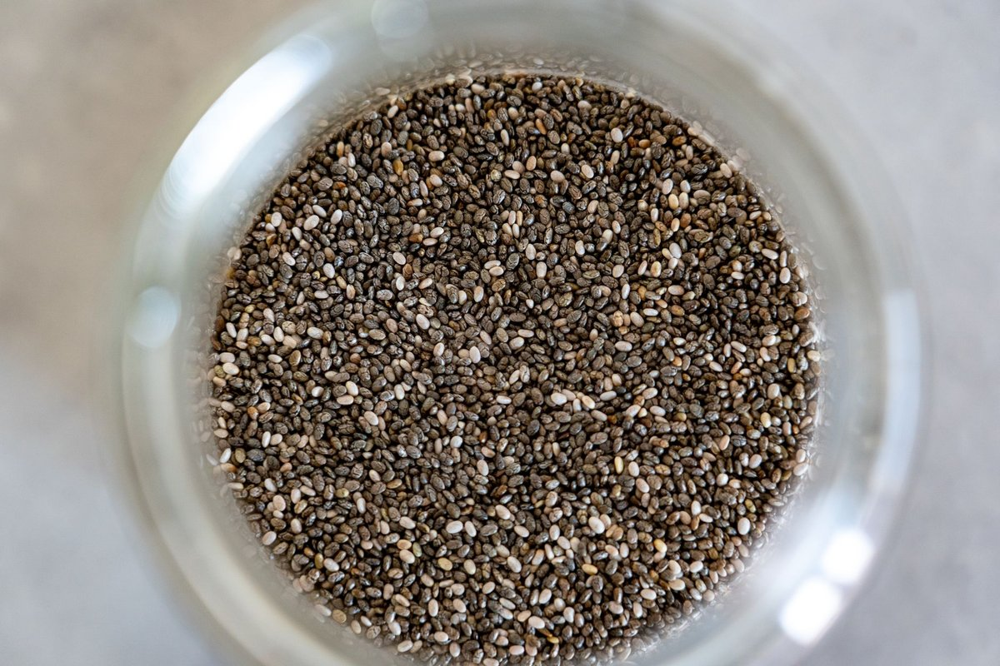

High Protein Breakfast Guide for Ultra-Busy Mornings

Key takeaways
- I used to crash hard by 10:30 AM every single workday, reaching for a third cup of coffee and a stale office pastry just to stay conscious.
- It took me years of fatigue to realize that my carbohydrate-heavy cereal was sabotaging my metabolic energy before my da
- Track what feels sustainable and adjust gradually.
I used to crash hard by 10:30 AM every single workday, reaching for a third cup of coffee and a stale office pastry just to stay conscious. It took me years of fatigue to realize that my carbohydrate-heavy cereal was sabotaging my metabolic energy before my day even started.
Switching to a genuinely robust High Protein Breakfast changed everything about my focus, physical endurance, and morning productivity. If you lead an active lifestyle, skimping on morning amino acids leaves your muscles depleted and your blood sugar on a wild roller coaster.
When you prioritize early-day fuel, your body naturally regulates hunger hormones like ghrelin throughout the afternoon. You can learn more about building balanced routines in this related healthy tip.
My go-to strategy relies heavily on savory cottage cheese bowls topped with pumpkin seeds, smoked salmon, and a dash of hot sauce. It sounds weird until you try it, but it packs 35 grams of protein with zero stove time required.
Another staple in my routine is scrambled egg whites mixed with one whole egg, cottage cheese blended directly into the liquid eggs, and black beans. Check out this another practical guide to see how tiny shifts in meal assembly yield massive energy gains.
Pro-Tip: Keep hard-boiled eggs peeled and stored in a glass container with a damp paper towel. They stay fresh for five days and eliminate all morning prep friction.
As active people, our gut microbiome plays a silent, massive role in how efficiently we actually break down and absorb those dense morning proteins. Supporting your digestion ensures you don't end up bloated after eating a heavy meal.
That is why I pair my daily nutrition with a quality supplement like the Daily Synbiotic Capsule to keep my GI tract happy, optimized, and ready for heavy lifting. It helps smooth out the digestive process when switching from light carbs to dense fuel.
The 2-Minute Win
Blend 1 cup of plain low-fat Greek yogurt, half a cup of unsweetened almond milk, a scoop of unflavored whey, and a handful of frozen berries for an instant 40g protein boost on your way out the door.
For more strategies on staying energized, feel free to read this similar wellness insight. Eating this way shouldn't feel like a rigid, miserable chore.
Give yourself permission to buy pre-cooked turkey sausage or pasteurized liquid egg whites if it saves your sanity during hectic weekdays. To refine your habits, review this strategy to stay consistent with this.
Educational only — not medical advice.
Disclosure: This page may contain affiliate links.
Ready to overhaul your morning routine completely? Take a moment to explore more healthy-habits guides and conquer your daily goals.
Recommended Reading
- Morning Routines for Energy & Focus: Boost Your Day Even If You're Not a Morning Person
- The Ultimate Guide to Daily Hydration: Boost Energy & Wellness
- Mindful Eating: Boost Gut Health & Digestion Naturally
More in healthy-habits
 healthy-habits
healthy-habits3 Practical Ways Leucine Does More Than Build Muscle
Discover how Leucine Does More Than Build Muscle. It Powers Up Your Cells to boost mitochondrial energy and vitality nat
Read article → healthy-habits
healthy-habitsFenugreek May Help Sexual Function, Period Pain, And Lactation
Discover how Fenugreek May Help Sexual Function, Period Pain, And Lactation with practical, science-backed tips to balan
Read article →Related posts
healthy-habits3 Practical Ways Leucine Does More Than Build Muscle
Discover how Leucine Does More Than Build Muscle. It Powers Up Your Cells to boost mitochondrial energy and vitality nat
Read article →healthy-habitsFenugreek May Help Sexual Function, Period Pain, And Lactation
Discover how Fenugreek May Help Sexual Function, Period Pain, And Lactation with practical, science-backed tips to balan
Read article → healthy-habits
healthy-habitsHow I Made Walking for Health Stick for Real Weight Loss
Discover how Walking for Health transformed my weight management journey with sustainable, low-impact routines. Simple s
Read article →